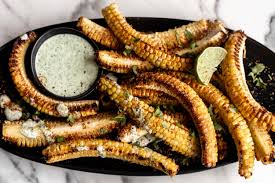

Corn Ribs
Home
Corn Ribs

What are Corn Ribs?
tbh i dont really know either i just found something random on reddit but it sounds good for BBQs!! try it and lmk!
Ingredients
- Sweet corns
- Olive oil
- Paprika
- Black pepper
- Salt
- Garlic powder/Grated garlic
Steps
- To Prepare the seasoning In a bowl, take Olive Oil 2 Tbsp Then add Paprika, Black pepper powder, salt & Grated Garlic/Garlic powder - 1 tsp. If you dont have paprika use red chilli powder
- To cut the sweet corn ribs Cut the sweet corn vertically in 4 parts.
Tips to cut the corn ribs:
Tips to cut the corn ribs
- Cut on a steady surface
- Use a Sharp Knife
- Pat on the knife with heavy weight Cutting the corns can be dangerous, so if you are not confident use the whole corn.
- To prepare corn ribs Apply the prepared seasoning on the corn rib using a brush. If you don’t have a brush you can apply using a spoon or directly apply with your hands.
- To bake the Corn Ribs in the Oven Pre-heat the oven for 5 mins at 375 F or 190 C Then Take a Baking Tray Cover with a parchment paper or butter paper Place the corn ribs Place the tray in the oven Bake for approx 30 mins at 375 F or 190 C or until the corn gets curled and slightly charred